最新消息
關於桃園燈節
四大燈區
活動資訊
燈節順道遊活動
交通資訊
最新消息
關於桃園燈節
四大燈區
活動資訊
燈節順道遊活動
交通資訊
燈節順道遊活動
燈節順道遊活動
觀光推薦遊程．一日遊
觀光推薦遊程．一日遊
觀光推薦遊程．二日遊
桃園燈節特約旅宿
桃園農業博覽會
桃園觀光導覽網
一日遊推薦遊程
桃園主燈區
綠野尋蹤趣：
自駕、UBike：全齡樂活
行程：
桃園火車站 → 桃園景福宮 → 虎頭山 → 全齡友善步道 → 桃園忠烈祠暨神社文化園區 → 土地公文化館 → 桃園主燈區
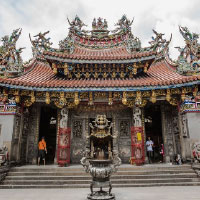
桃園景福宮
具百年歷史的景福宮，其建築細節頗富藝術價值；全台稀有的歇山式「假四垂｣屋頂，讓宮廟外觀更顯壯麗；螭虎栱數量密集、多變造型為全台之冠，大器呈現斗栱之美；宮內各種木石雕刻、彩繪，皆出自名師之手，精美程度可媲美國外之百年教堂。
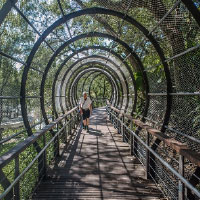
虎頭山全齡友善步道
虎頭山全齡友善步道全長共1公里，始於奧爾森林學堂，沿著環山道路(三聖路)至桃信亭，沿途串接原有的核心廣場、野餐區、香菇亭、扶輪亭、景德祠等休憩區，並增設毛毛蟲花廊隧道，球體鐵網造型是步道亮點之一，步行其中，欣賞搖曳樹影也感悠閒。還有松鼠窩平台、鳥巢樹屋，運氣好的話能近距離與隨時出沒的山中動物、飛鳥驚喜邂逅。
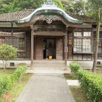
桃園忠烈祠
座落於桃園市虎頭山上的桃園市忠烈祠，落成於民國二十七年，前身為日本人所建造的「桃園神社」，是臺灣保存最為完整的日治時代神社，建築風格融合了中國古代唐風、日本風及臺灣近代風，採用上等台灣檜木構築，並已在民國八十三年經公告正式被列為國家三級古蹟；也因為特殊的歷史文化價值，而被電影《KANO》選中成為拍片場景，引領觀眾深刻感受1930年代的歲月回憶。
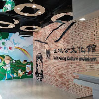
土地公文化館
桃園區內平均每平方公里就有7座以上的土地公廟，密度高居全國之冠。為推廣土地公信仰文化，1樓設立桃園市首座公有廟宇﹣福德宮﹔金碧輝煌的神龕、瑰麗的梁柱彩繪與遒勁有力的石雕，展現寺廟富麗堂皇的氣度。福德宮為桃園市首座公有廟宇，除了不接受信徒香油錢，也不鼓勵民眾燒金紙、上香，響應環保。
龜山燈區
漫遊老眷村：
自駕、UBike：眷村故事重遊
行程：
桃園火車站 → 南僑觀光工廠、可口可樂觀光工廠 → 眷村故事館 → 憲光二村 → 壽山巖觀音寺 → 龜山燈區
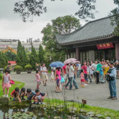
南僑觀光工廠
南僑桃園觀光體驗工廠佔地3,700坪，停車便利，兼具環保知識、產業教育、餐飲美食文化及歷史傳承，來這裡走一趟，既可以了解南僑的產業，體驗多樣化DIY活動，也可以品嚐異國美食，是一間寓教於樂的觀光工廠。
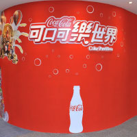
可口可樂世界
想知道「可口可樂」如何建立起充滿歡樂魅力、豐富創意的國度嗎？歡迎來到位在桃園的「可口可樂世界」，來一趟「可口可樂」之旅，從時光長廊走進「可口可樂」的歷史，並探訪「可口可樂」的生產過程，以及「可口可樂」100多年來的精彩的發展故事。
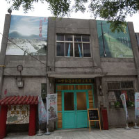
眷村故事館
在故事館內，著重在保存這段特殊的眷村歷史，以人物為主軸，展示物件為輔，從文化分析的觀點帶領遊客認識眷村，期盼透過歷史的回溯，重新詮釋在龜山這段重要的文史發展，創造眷村文化再生環境。
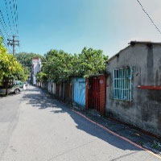
憲光二村
憲光二村建於1968年，屬眷村型態之社區，為桃園唯一之憲兵宿舍。村內多維持甘蔗板隔間之石灰牆，外圍則以紅磚牆為主。目前在村中還留有文化牆。
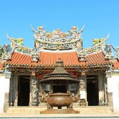
壽山巖觀音寺
壽山巖觀音寺舊稱壽山巖寺，俗稱嶺頂廟，於清乾隆七年即已草創，是一座兩進兩護龍的廟宇，中央三開間的前殿與正殿，是大正四年（西元1915年）的風格，並於2013年獲選內政部「臺灣宗教百景」之一，是很有歷史意義的宗教建築物。
水汴頭燈區
鐵騎逍遙遊：
UBike
行程：
桃園火車站 → 桃園站前商圈 → 南門市場 → 桃園劍道故事館 → 藝文特區 → 經國特區南 → 崁溪自行車道 → 水汴頭燈區
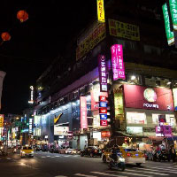
桃園火車站前商圈
桃園站前商圈可說是一處融合了新舊文化的特色商圈，因為具有地利之便，迅速吸收其他的業者進駐，商圈擴大成形。靠近火車站商圈前段百貨3C林立，為精品百貨聚落；以成功路為主的商圈中段，服飾商店、中西式料理、咖啡輕食相繼進駐，貼近年輕人的消費需求
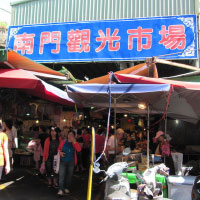
南門市場
在桃園市南華街與文化街交叉口的『南門市場』，可以說算是市區最有規模的傳統市場. 最重要的是裡頭隱藏著許多美食小吃，
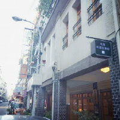
劍道故事館
劍道館的位址是光復初期落成的私宅三樓，一樓前身為業主父親徐銀格先生創辦之私立桃園醫院，充滿了台式老房子特有的情感與氣息。徐彥郎重新整修這座光復初期落成的三層樓老宅，一、二樓分別為交誼廳與小型文化表演交流場地，三樓為劍道故事館主軸。
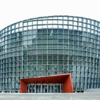
藝文園區
川流不息的車潮、店家林立的商圈，繁忙的中正路上，桃園藝文廣場這塊城市綠金，實踐人們親近自然的美好嚮往。上萬坪廣場，廣大的綠地佔了大片面積，不乏有親子玩飛盤、追逐嬉戲的畫面，寬闊的步道上，慢跑者專注而行，「樂活｣就是這裡的生活態度。
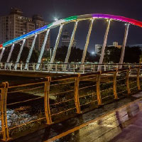
南崁溪自行車道
南崁溪水岸自行車道是少數成功融合自然地景的休閒車道，全長15公里，以公園綠地與造景橋串聯龜山、桃園、蘆竹、大園，單車行進間享受市區難得的開闊視野，白天夜晚各有不同風情。
蘆竹燈區
瞬遊機捷：
桃園機場捷運
行程：
機場捷運A8長庚醫院站：環球購物中心、桃園酒廠 → 機捷A11坑口站：坑口彩繪村 → A10山鼻站：德馨堂、五酒桶山 → 蘆竹燈區
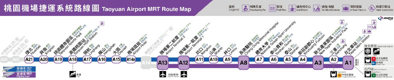
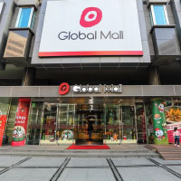
環球購物中心
環球購物中心桃園店，離桃園國際機場相當近，來自四面八方的旅客，可逛完商場後直接飛出國。購物中心提供遊客眾多選擇，不但能滿足前往國外旅客的需要，也成為林口在地人的一日生活圈。
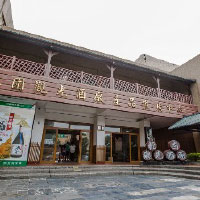
桃園酒廠
桃園酒廠為全台第一家現代化、也是唯一生產日式清酒的釀製廠，廠內詳盡介紹悠久釀酒歷史，並可看到桃園酒廠最具代表性的產品－「玉泉清酒｣，從米的挑選、浸泡、到酒麴發酵等製程，皆以小型模型完整呈現。近聞酒粕散發的高雅香氣，令人期待製成的清酒滋味。現場提供清酒試喝，溫潤口感，一飲難忘。
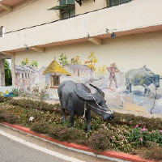
坑口彩繪村
擁有百年歷史的陳家德馨堂興建於清朝年間，為蘆竹區少數保存良好的閩南式傳統民居，具北台灣少見的燕尾形屋脊，只有當時的秀才才能興建，做工精緻細膩，除了是陳氏紀念來台先人的祭祀中心，更被桃園市政府定為三級古蹟。
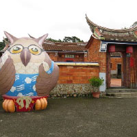
德馨堂
挑戰完羊稠森林步道，身體中的冒險因子依舊躍躍欲動嗎?鄰近的五酒桶山步道等你熱血征服，帶你用不一樣的視角認識蘆竹！五酒桶山步道全程約4公里，由五條路線串聯，海拔高度落差約80公尺，讓你流點汗、跨越自己的極限！
五酒桶山
壽山巖觀音寺舊稱壽山巖寺，俗稱嶺頂廟，於清乾隆七年即已草創，是一座兩進兩護龍的廟宇，中央三開間的前殿與正殿，是大正四年（西元1915年）的風格，並於2013年獲選內政部「臺灣宗教百景」之一，是很有歷史意義的宗教建築物。